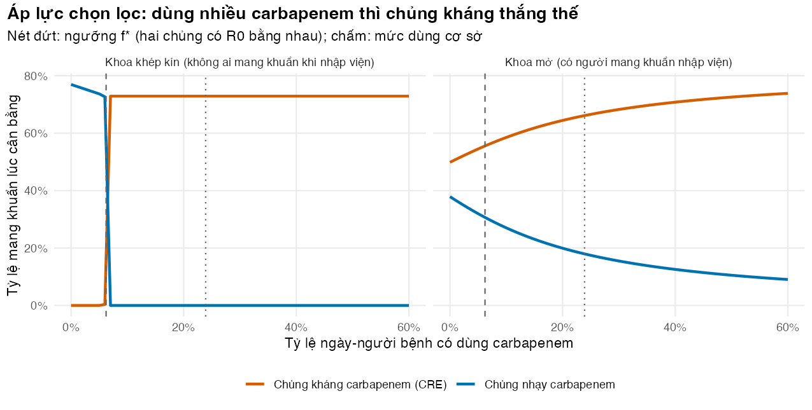
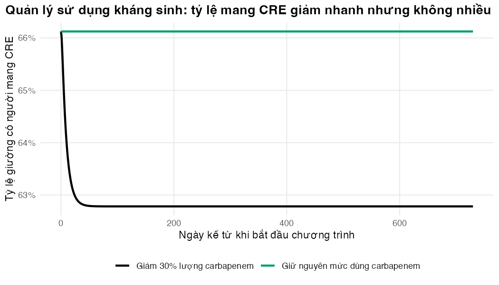

Dùng mô hình hai chủng để thấy vì sao dùng nhiều carbapenem giúp CRE thắng thế, và quản lý sử dụng kháng sinh làm được đến đâu
Vì sao bạn nên quan tâm?
Trong các điều tra cắt ngang hằng tháng ở 15 ICU người lớn tại Việt Nam (2012–2013), cứ 100 người bệnh thì khoảng 24 người đang dùng một carbapenem (Phu và c.s. 2016). Một ngày meropenem generic chỉ tốn khoảng 159,000 VNĐ (giá 2025), bằng 4 bát phở, rẻ hơn 25 lần một ngày colistin phối hợp meropenem liều cao mà người bệnh cần khi CRE đã thắng thế. Cái giá thật của carbapenem không nằm trên hóa đơn: mỗi ngày dùng thuốc lại dọn chỗ cho chủng kháng. Bài này giúp bạn ước lượng việc giảm dùng carbapenem làm giảm CRE được bao nhiêu và nhanh đến đâu, trước khi đặt kỳ vọng vào một chương trình quản lý sử dụng kháng sinh.
Mục tiêu học tập
Sau bài này, bạn có thể:
Viết mô hình hai chủng, trong đó chủng nhạy carbapenem và chủng kháng (Enterobacterales kháng carbapenem, carbapenem-resistant Enterobacterales, CRE) cạnh tranh nhau để định cư ở người bệnh chưa mang khuẩn.
Tính hệ số lây nhiễm cơ bản (R0) của từng chủng và ngưỡng mức dùng carbapenem \(f^*\) để chủng kháng thắng thế, rồi kiểm tra bằng lời giải số.
Phân biệt khoa khép kín, nơi một chủng loại trừ chủng kia, với khoa mở, nơi hai chủng cùng tồn tại nhờ người mang khuẩn nhập viện.
Mô phỏng một kịch bản quản lý sử dụng kháng sinh (antimicrobial stewardship) và diễn giải tốc độ cũng như độ lớn của thay đổi.
Ý chính
Kháng sinh tác động lên vi khuẩn định cư theo hai cách: diệt chủng nhạy, và nhờ đó để trống “chỗ” cho chủng kháng. Đó là áp lực chọn lọc (selection pressure).
Mô hình thường giả định chủng kháng chịu fitness cost (chi phí thích nghi): khi không có kháng sinh, nó lây kém hơn chủng nhạy. Bằng chứng cho CRE còn hạn chế: tổng quan của Falagas và cộng sự chỉ dẫn một nghiên cứu cho thấy dòng Klebsiella kháng carbapenem kém độc lực và kém thích nghi hơn khi không có kháng sinh (Falagas và c.s. 2014), và theo mô hình của Lipsitch và cộng sự, kháng thuốc có thể giảm nhanh trong bệnh viện ngay cả khi không có fitness cost (Lipsitch, Bergstrom, và Levin 2000).
Trong mô hình khoa khép kín, chủng có R0 lớn hơn sẽ thắng hoàn toàn. Chủng kháng thắng khi mức dùng kháng sinh vượt ngưỡng \(f^*\).
Trong mô hình khoa mở, nơi người mang khuẩn liên tục nhập viện, hai chủng cùng tồn tại và tỷ lệ kháng tăng dần theo lượng kháng sinh dùng. Khoa thật gần mô hình này hơn.
Mô hình của Lipsitch và cộng sự dự báo bệnh viện phản ứng với can thiệp trong vài tuần đến vài tháng, nhanh hơn nhiều so với kháng thuốc ở cộng đồng, vì người bệnh luân chuyển liên tục (Lipsitch, Bergstrom, và Levin 2000).
Cũng theo mô hình đó, biện pháp giảm lây truyền không đặc hiệu, như vệ sinh tay, làm giảm tỷ lệ mang chủng kháng nhiều hơn chủng nhạy (Lipsitch, Bergstrom, và Levin 2000).
Trong mô hình của bài, khi lây truyền và người mang khuẩn nhập từ ngoài còn mạnh, giảm 30% lượng carbapenem chỉ giảm tỷ lệ mang CRE khoảng 5% (tương đối), nên quản lý sử dụng kháng sinh cần đi cùng kiểm soát nhiễm khuẩn. Ở bốn bệnh viện tuyến huyện, một can thiệp quản lý sử dụng kháng sinh sáu tháng cũng không làm thay đổi tỷ lệ mang vi khuẩn sinh carbapenemase (Doshi và c.s. 2026).
Nội dung
Áp lực chọn lọc
Hãy hình dung đường ruột của người bệnh ICU như một “chỗ ở” mà nhiều chủng Klebsiella pneumoniae tranh nhau. Khi người bệnh dùng carbapenem, chủng nhạy bị loại bỏ, còn chủng kháng thì không. Người bệnh đó trở thành chỗ trống mà chủng kháng dễ chiếm hơn. Lặp lại trên hàng trăm người bệnh, lượng kháng sinh dùng trong khoa trở thành động lực của tỷ lệ kháng thuốc. Ở cấp cộng đồng, mối liên hệ giữa lượng kháng sinh tiêu thụ và tần suất kháng thuốc đã được mô tả từ lâu (Austin, Kristinsson, và Anderson 1999). Tại các bệnh viện trong mạng VINARES, lượng kháng sinh tiêu thụ trung bình là 918 DDD trên 1,000 ngày-người bệnh, nhiều nhất là cephalosporin thế hệ 3 với 223 DDD (Vu và c.s. 2019). Trong các điều tra cắt ngang ở ICU người lớn, 23.9% người bệnh có carbapenem trong ngày điều tra (786 lượt kê trên 3,287 người bệnh) (Phu và c.s. 2016); đó là mức dùng cơ sở \(f\) của bài.
Mô hình hai chủng
Ta mở rộng mô hình của Bài 3 theo hướng của Lipsitch và cộng sự (Lipsitch, Bergstrom, và Levin 2000), nhưng đơn giản hơn: mọi người mang chủng nhạy đều chịu phơi nhiễm carbapenem ở mức trung bình \(f \cdot k\), không có ngăn riêng cho người đang dùng và không dùng kháng sinh. Vì thế mô hình không thể hiện được sự khác nhau giữa liên quan ở cấp cá nhân và tác động ở cấp quần thể (xem “Lỗi thường gặp”). Tỷ lệ giường được chia thành ba nhóm: \(X\) chưa mang chủng nào, \(S\) mang chủng nhạy, \(R\) mang chủng kháng, với \(X + S + R = 1\).
flowchart LR X["X: chưa mang khuẩn"] -->|"β_S · S"| S["S: mang chủng nhạy"] X -->|"β_R · R"| R["R: mang CRE"] S -->|"γ + τ (tự hết + carbapenem)"| X R -->|"γ (tự hết)"| X IN["Nhập viện: m_S, m_R, 1 − m_S − m_R"] --> X IN --> S IN --> R
flowchart LR
X["X: chưa mang khuẩn"] -->|"β_S · S"| S["S: mang chủng nhạy"]
X -->|"β_R · R"| R["R: mang CRE"]
S -->|"γ + τ (tự hết + carbapenem)"| X
R -->|"γ (tự hết)"| X
IN["Nhập viện: m_S, m_R, 1 − m_S − m_R"] --> X
IN --> S
IN --> R
\[
\begin{aligned}
\frac{dS}{dt} &= \mu m_S + \beta_S S X - (\mu + \gamma + \tau) S, \\
\frac{dR}{dt} &= \mu m_R + \beta_R R X - (\mu + \gamma) R, \qquad \tau = f \cdot k .
\end{aligned}
\]
Ở đây \(\mu\) là tỷ suất ra viện, \(\gamma\) là tỷ suất tự hết mang khuẩn, \(f\) là tỷ lệ ngày-người bệnh có dùng carbapenem, và \(k\) là tốc độ carbapenem loại bỏ chủng nhạy. Chủng kháng có hệ số lây truyền \(\beta_R\) như ở Bài 3. Fitness cost \(c\) làm chủng kháng lây kém hơn: \(\beta_R = (1-c)\beta_S\). Trong params/twostrain.csv, chỉ mức dùng carbapenem \(f\) có nguồn; fitness cost, tốc độ tự hết mang khuẩn, tốc độ diệt chủng nhạy và tỷ lệ mang chủng nhạy khi nhập viện là giá trị minh họa. \(m_R\), \(\beta_R\) và \(\mu\) dùng lại tỷ lệ mang CRE khi nhập ICU, hệ số lây truyền và thời gian nằm ICU của Bài 3.
Khoa khép kín: loại trừ cạnh tranh
Nếu không ai mang khuẩn khi nhập viện (\(m_S = m_R = 0\)), mỗi chủng có hệ số lây nhiễm cơ bản riêng:
Chủng có R0 lớn hơn sẽ chiếm hết chỗ và đẩy chủng kia ra khỏi khoa; tỷ lệ mang của nó tiến về \(1 - 1/R_0\). Cho \(R_{0,S} = R_{0,R}\), ta được ngưỡng mức dùng carbapenem:
Dùng carbapenem nhiều hơn \(f^*\) thì CRE thắng. Fitness cost càng lớn thì ngưỡng càng cao. Công thức này là một dạng của nguyên lý loại trừ cạnh tranh. Trong mô hình của bài, hai chủng cùng tồn tại nhờ người mang khuẩn nhập viện (phần sau). Các mô hình kháng thuốc khác dùng giả định khác về cạnh tranh trong cơ thể vật chủ và ở cấp quần thể, và chọn cấu trúc mô hình khác nhau có thể dẫn đến kết luận khác nhau (Spicknall và c.s. 2013).
Khoa mở: cùng tồn tại
Khi người mang khuẩn liên tục nhập viện, không chủng nào bị loại trừ. Tỷ lệ CRE không nhảy bậc tại \(f^*\) mà tăng dần theo \(f\). Đây là bức tranh gần với ICU thật hơn. Một mô hình khác, đa thuốc, của Bergstrom và cộng sự dự báo rằng “luân phiên kháng sinh” theo chu kỳ khó giảm kháng thuốc trong bệnh viện, còn dùng đồng thời nhiều nhóm thuốc (mixing) được dự báo hiệu quả hơn (Bergstrom, Lo, và Lipsitch 2004). Mô hình hai chủng của bài này không bàn đến câu hỏi đó.
Quản lý sử dụng kháng sinh
Chương trình quản lý sử dụng kháng sinh làm giảm \(f\). Trong mô hình, điều đó làm tăng \(R_{0,S}\), giúp chủng nhạy giành lại chỗ, và làm giảm CRE. Hai câu hỏi cho người ra quyết định là giảm bao nhiêu và nhanh đến đâu. Câu trả lời phụ thuộc vào mức độ CRE được duy trì bởi lây truyền và người mang khuẩn nhập từ ngoài, những yếu tố mà quản lý kháng sinh không tác động trực tiếp. Bài 5 sẽ quy kết quả này ra chi phí và QALY.
Thực hành
Mức dùng carbapenem, tỷ lệ mang CRE khi nhập ICU và thời gian nằm ICU có nguồn; các tham số chọn lọc (fitness cost, tốc độ diệt chủng nhạy) là minh họa, nên kết quả định lượng chỉ minh họa phương pháp. Nạp hàm, tham số, và lưới các mức dùng carbapenem để khảo sát. Kiểm tra: mức dùng cơ sở khớp số liệu điều tra.
if (!isTRUE(l10n_info()[["UTF-8"]])) invisible(Sys.setlocale("LC_CTYPE", "en_US.UTF-8"))source("../_shared/R/helpers.R")source("../_shared/R/vn_data.R") # course-wide values: vn_context(), vn_prices(), vn_mx(), inflate_vnd()source("code/model.R")library(ggplot2)p <-read_all_params()F_GRID <-seq(0, 0.6, by =0.01) # carbapenem use: share of patient-days# Baseline carbapenem use = patients on a carbapenem in the Vietnamese ICU point-prevalence surveys# (Phu et al. 2016: carbapenem prescriptions / patients surveyed); the CSV value must match itround(c(f_abx = p$f_abx, from_survey = p$phu2016_carb_rx / p$phu2016_n), 3)
# Check: at f_star both strains have the same R0tp_star <-twostrain_parms(p, f_abx = f_star)stopifnot(abs(diff(twostrain_R0(tp_star))) <1e-10)
Ở mức dùng cơ sở 24%, \(R_{0,S}\) = 2.59 và \(R_{0,R}\) = 3.69. Ngưỡng \(f^*\) = 6.2%: chỉ cần khoảng 6 trên 100 ngày-người bệnh có dùng carbapenem là CRE đã có lợi thế trong khoa khép kín.
Tiếp theo, giải mô hình đến trạng thái cân bằng cho khoa khép kín ở từng mức dùng. Kiểm tra: ở mức cơ sở, CRE ổn định đúng ở \(1 - 1/R_{0,R}\) và chủng nhạy biến mất.
# Closed ward (nobody is admitted carrying either strain): competitive exclusionclosed <-NULLfor (f in F_GRID) { tp_f <-twostrain_parms(p, f_abx = f) tp_f$m_s <-0 tp_f$m_r <-0 eq <-twostrain_equilibrium(tp_f) closed <-rbind(closed, data.frame(f_abx = f, X = eq[["X"]], S = eq[["S"]], R = eq[["R"]]))}# Analytic check: the winner settles at 1 - 1/R0 (its own R0), the loser at 0tp_base_closed <- tptp_base_closed$m_s <-0tp_base_closed$m_r <-0eq_closed <-twostrain_equilibrium(tp_base_closed)round(c(eq_closed, analytic_R =1-1/ R0[["R"]]), 4)
Làm lại cho khoa mở, có người mang khuẩn nhập viện. Kiểm tra: tổng ba nhóm bằng 1, và tỷ lệ CRE tăng đơn điệu theo mức dùng carbapenem.
# Open ward: carriers of both strains keep arriving, so both strains coexistopen <-NULLfor (f in F_GRID) { eq <-twostrain_equilibrium(twostrain_parms(p, f_abx = f)) open <-rbind(open, data.frame(f_abx = f, X = eq[["X"]], S = eq[["S"]], R = eq[["R"]]))}stopifnot(all(abs(open$X + open$S + open$R -1) <1e-6), # every bed counted onceall(abs(closed$X + closed$S + closed$R -1) <1e-6),all(diff(open$R) >0)) # more carbapenem use, more CRE carriageround(open[round(open$f_abx, 2) %in%c(0, 0.1, 0.2, 0.3, 0.4), ], 3) # a few rows to eyeball
f_abx X S R
1 0.0 0.123 0.379 0.498
11 0.1 0.145 0.270 0.585
21 0.2 0.156 0.199 0.644
31 0.3 0.163 0.155 0.683
41 0.4 0.167 0.126 0.708
Hình vẽ tỷ lệ mang hai chủng lúc cân bằng theo mức dùng carbapenem, ở khoa khép kín và khoa mở. Kiểm tra: nét đứt đánh dấu \(f^*\); hãy xem hai đường ở khoa khép kín đổi chỗ tại đâu và ở khoa mở chúng thay đổi thế nào.
sel_df <-rbind(data.frame(ward ="Khoa khép kín (không ai mang khuẩn khi nhập viện)", closed),data.frame(ward ="Khoa mở (có người mang khuẩn nhập viện)", open))sel_long <-data.frame(ward =rep(sel_df$ward, 2), f_abx =rep(sel_df$f_abx, 2),strain =rep(c("Chủng nhạy carbapenem", "Chủng kháng carbapenem (CRE)"), each =nrow(sel_df)),prev =c(sel_df$S, sel_df$R))fig_sel <-ggplot(sel_long, aes(f_abx, prev, colour = strain)) +geom_line(linewidth =1) +geom_vline(xintercept = f_star, linetype ="dashed", colour ="grey40") +geom_vline(xintercept = p$f_abx, linetype ="dotted", colour ="grey40") +facet_wrap(~ward) +scale_colour_manual(values = pal_course[c(2, 1)], name =NULL) +scale_x_continuous(labels =function(x) paste0(100* x, "%")) +scale_y_continuous(labels =function(x) paste0(100* x, "%")) +labs(x ="Tỷ lệ ngày-người bệnh có dùng carbapenem", y ="Tỷ lệ mang khuẩn lúc cân bằng",title ="Áp lực chọn lọc: dùng nhiều carbapenem thì chủng kháng thắng thế",subtitle ="Nét đứt: ngưỡng f* (hai chủng có R0 bằng nhau); chấm: mức dùng cơ sở") +theme_course()save_fig(fig_sel, "l04-selection.png", width =8.5, height =4.3)

Tỷ lệ mang chủng nhạy và CRE lúc cân bằng theo mức dùng carbapenem, trong khoa khép kín và khoa mở (tham số chọn lọc là minh họa).
Ở khoa khép kín, hai đường đổi chỗ đột ngột tại \(f^*\), thấp hơn nhiều so với mức dùng thực tế, nên ở mức dùng hiện nay CRE đã thắng thế. Ở khoa mở, CRE tăng từ 50% khi không dùng carbapenem lên 66% ở mức dùng cơ sở (23.9%).
Bây giờ là kịch bản quản lý sử dụng kháng sinh: giảm lượng carbapenem 30%, bắt đầu từ trạng thái cân bằng cơ sở. Kiểm tra: tổng ba nhóm vẫn bằng 1 ở mọi thời điểm.
# Stewardship: carbapenem use falls by stew_reduction, starting from the baseline equilibriumf_new <- p$f_abx * (1- p$stew_reduction)eq_base <-twostrain_equilibrium(tp)tp_stew <-twostrain_parms(p, f_abx = f_new)eq_stew <-twostrain_equilibrium(tp_stew)days_stew <-2*365traj_base <-run_twostrain(tp, days_stew, y0 = eq_base)traj_stew <-run_twostrain(tp_stew, days_stew, y0 = eq_base)stopifnot(all(abs(traj_stew$X + traj_stew$S + traj_stew$R -1) <1e-6))# Time to reach half of the eventual change in CRE carriagehalf_target <- eq_base[["R"]] - (eq_base[["R"]] - eq_stew[["R"]]) /2days_to_half <- traj_stew$time[which(traj_stew$R <= half_target)[1]]rel_red_R <-1- eq_stew[["R"]] / eq_base[["R"]] # relative fall in CRE carriage (positive = fall)# Per year in a 20-bed ICU: CRE acquisitions and carrier bed-days averted (first year)yr <-366acq_averted_yr <- (traj_base$AcqR[yr] - traj_stew$AcqR[yr]) * p$n_bedsdays_averted_yr <- (traj_base$DaysR[yr] - traj_stew$DaysR[yr]) * p$n_bedsround(c(R_before = eq_base[["R"]], R_after = eq_stew[["R"]],rel_change = eq_stew[["R"]] / eq_base[["R"]] -1, days_to_half = days_to_half,acq_averted_yr = acq_averted_yr, carrier_days_averted_yr = days_averted_yr), 3)
Hình so hai quỹ đạo của tỷ lệ mang CRE theo thời gian. Kiểm tra: hai đường xuất phát từ cùng một điểm cân bằng.
stew_df <-rbind(data.frame(time = traj_base$time, scenario ="Giữ nguyên mức dùng carbapenem",S = traj_base$S, R = traj_base$R),data.frame(time = traj_stew$time, scenario =sprintf("Giảm %s lượng carbapenem",fmt_pct(p$stew_reduction, 0)),S = traj_stew$S, R = traj_stew$R))fig_stew <-ggplot(stew_df, aes(time, R, colour = scenario)) +geom_line(linewidth =1) +scale_colour_manual(values = pal_course[c(8, 3)], name =NULL) +scale_y_continuous(labels =function(x) paste0(100* x, "%")) +labs(x ="Ngày kể từ khi bắt đầu chương trình", y ="Tỷ lệ giường có người mang CRE",title ="Quản lý sử dụng kháng sinh: tỷ lệ mang CRE giảm nhanh nhưng không nhiều") +theme_course()save_fig(fig_stew, "l04-stewardship.png", width =7, height =4)

Tỷ lệ giường có người mang CRE khi giữ nguyên và khi giảm lượng carbapenem (mức giảm và tham số chọn lọc là minh họa).
Tỷ lệ mang CRE giảm từ 66.1% xuống 62.8%, tức giảm tương đối 5%. Một nửa thay đổi xảy ra sau 8 ngày, trong vòng ba tháng, cùng bậc với dự báo của Lipsitch và cộng sự. Trong năm đầu, một ICU 20 giường tránh được khoảng 43 ca định cư CRE mới (số ca thô, chưa chiết khấu). Mức giảm dưới một nửa số mang CRE ban đầu: phần còn lại, trong mô hình này, được duy trì bởi lây truyền và người mang khuẩn nhập từ ngoài mà quản lý kháng sinh không tác động trực tiếp.
Mẹo thực hành
Luôn chạy mô hình ở hai trường hợp đơn giản (khoa khép kín, không dùng kháng sinh) và so với kết quả giải tích trước khi tin kết quả của trường hợp phức tạp.
Khởi đầu mô hình từ trạng thái cân bằng của kịch bản cơ sở khi mô phỏng can thiệp. Nếu không, bạn sẽ lẫn tác động của can thiệp với quá trình mô hình “ổn định”.
Vẽ kết quả theo cả một dải mức dùng kháng sinh, không chỉ hai điểm “trước” và “sau”. Hình dạng đường cong cho biết có ngưỡng hay không.
Đo lượng kháng sinh bằng đơn vị có thể ánh xạ vào mô hình, như số ngày điều trị trên 1,000 ngày-người bệnh.
Lỗi thường gặp
Mô hình hai chủng không có cơ chế cùng tồn tại rồi diễn giải kết quả “chủng kháng biến mất hoàn toàn” như dự báo thực tế.
Nhầm liên quan ở cấp cá nhân với tác động ở cấp quần thể. Người dùng kháng sinh có nguy cơ mang chủng kháng cao hơn, nhưng tác động của chính sách lên tỷ lệ kháng chung có thể nhỏ hơn hoặc khác chiều (Lipsitch, Bergstrom, và Levin 2000). Mô hình trung bình ở trên không phân biệt được hai mức này; muốn thấy sự khác nhau cần thêm ngăn người đang dùng và không dùng kháng sinh.
Bỏ qua fitness cost hoặc coi nó là chắc chắn.\(f^*\) rất nhạy với \(c\) (Bài tập 3); hãy khảo sát cả dải giá trị.
Kỳ vọng quản lý kháng sinh tự nó xóa được CRE khi lây truyền và người mang khuẩn nhập từ ngoài còn cao.
Bài tập
Bài 1 (dễ). Tìm \(f^*\) bằng phương pháp số với uniroot() và so sánh với công thức đóng.
Lời giải
Hàm r0_gap() trả về hiệu hai R0; nghiệm của nó là \(f^*\).
# Exercise 1: find f* numerically (uniroot) and compare with the closed-form thresholdr0_gap <-function(f) diff(twostrain_R0(twostrain_parms(p, f_abx = f)))f_star_num <-uniroot(r0_gap, c(0, 1), tol =1e-10)$rootround(c(closed_form = f_star, numerical = f_star_num), 5)
closed_form numerical
0.06221 0.06221
Hai cách cho cùng kết quả đến sai số đã chọn (tol).
Bài 2 (vừa). Một chương trình vệ sinh tay làm giảm lây truyền của cả hai chủng 20% (giá trị minh họa). Tỷ lệ mang chủng nhạy và CRE thay đổi bao nhiêu phần trăm?
Lời giải
# Exercise 2: a non-specific measure (e.g. hand hygiene) cuts transmission of BOTH strainseq_hh <-twostrain_equilibrium(twostrain_parms(p, beta_scale =1- p$hh_reduction))round(c(rel_change_S = eq_hh[["S"]] / eq_base[["S"]] -1,rel_change_R = eq_hh[["R"]] / eq_base[["R"]] -1), 3)
rel_change_S rel_change_R
-0.022 -0.044
CRE giảm 4%, còn chủng nhạy giảm 2%. Biện pháp không đặc hiệu tác động mạnh hơn lên chủng kháng, vì chủng kháng phụ thuộc nhiều hơn vào lây truyền trong khoa, trong khi chủng nhạy còn bị kháng sinh dọn bớt.
Bài 3 (khó). Fitness cost của CRE chưa được biết chắc. Tính \(f^*\) với \(c\) bằng 5%, 15% và 30% (cận dưới, giá trị cơ sở và cận trên trong bảng tham số). Kết quả nói gì về độ tin cậy của một khuyến cáo kiểu “giữ mức dùng carbapenem dưới \(f^*\)”?
Lời giải
# Exercise 3: how the threshold f* depends on the fitness cost of resistance (low, base, high)tab_ts <-attr(p, "table")row_c <- tab_ts[tab_ts$name =="fit_cost", ]costs <-c(row_c$low, row_c$value, row_c$high)f_by_cost <-sapply(costs, function(cst) { p_c <- p p_c$fit_cost <- csttwostrain_f_threshold(twostrain_parms(p_c))})round(data.frame(fit_cost = costs, f_star = f_by_cost), 3)
Ngưỡng thay đổi từ 1.9% đến 15.1%, gấp 8 lần. Một khuyến cáo dựa trên một giá trị \(f^*\) duy nhất không vững. Đây là chỗ phân tích độ nhạy và giá trị thông tin (M03) phát huy tác dụng: biết chính xác \(c\) có thể có giá trị cao.
Tài liệu tham khảo
Austin, D. J., K. G. Kristinsson, và R. M. Anderson. 1999. “The relationship between the volume of antimicrobial consumption in human communities and the frequency of resistance”. Proceedings of the National Academy of Sciences of the USA 96 (3): 1152–56. https://doi.org/10.1073/pnas.96.3.1152.
Bergstrom, Carl T., Monique Lo, và Marc Lipsitch. 2004. “Ecological theory suggests that antimicrobial cycling will not reduce antimicrobial resistance in hospitals”. Proceedings of the National Academy of Sciences of the USA 101 (36): 13285–90. https://doi.org/10.1073/pnas.0402298101.
Doshi, Jaslyn, Thai Duy Pham, Yen Ngoc Pham, Thuy Thu Ma, Linh Thuy Duong, Qingbin Li, Thanh Ha Nguyen, và c.s. 2026. “Multidrug-resistant organism carriage in Vietnamese district hospitals before and after an antimicrobial stewardship intervention”. Antimicrobial Resistance and Infection Control 15 (1). https://doi.org/10.1186/s13756-026-01752-5.
Falagas, Matthew E., Giannoula S. Tansarli, Drosos E. Karageorgopoulos, và Konstantinos Z. Vardakas. 2014. “Deaths attributable to carbapenem-resistant Enterobacteriaceae infections”. Emerging Infectious Diseases 20 (7): 1170–75. https://doi.org/10.3201/eid2007.121004.
Lipsitch, M., C. T. Bergstrom, và B. R. Levin. 2000. “The epidemiology of antibiotic resistance in hospitals: paradoxes and prescriptions”. Proceedings of the National Academy of Sciences of the USA 97 (4): 1938–43. https://doi.org/10.1073/pnas.97.4.1938.
Phu, Vu Dinh, Heiman F L Wertheim, Mattias Larsson, Behzad Nadjm, Quynh-Dao Dinh, Lennart E Nilsson, Ulf Rydell, và c.s. 2016. “Burden of Hospital Acquired Infections and Antimicrobial Use in Vietnamese Adult Intensive Care Units”. PLoS One 11 (1): e0147544. https://doi.org/10.1371/journal.pone.0147544.
Spicknall, Ian H., Betsy Foxman, Carl F. Marrs, và Joseph N. S. Eisenberg. 2013. “A modeling framework for the evolution and spread of antibiotic resistance: literature review and model categorization”. American Journal of Epidemiology 178 (4): 508–20. https://doi.org/10.1093/aje/kwt017.
Vu, Tien Viet Dung, Thi Thuy Nga Do, Ulf Rydell, Lennart E. Nilsson, Linus Olson, Mattias Larsson, và c.s. 2019. “Antimicrobial susceptibility testing and antibiotic consumption results from 16 hospitals in Viet Nam: the VINARES project 2012–2013”. Journal of Global Antimicrobial Resistance 18: 269–78. https://doi.org/10.1016/j.jgar.2019.06.002.
Kịch bản video (~13 phút)
#
Slide
Lời giảng chính
Hình/Code
1
Đường ruột là “chỗ ở”
Kháng sinh dọn chỗ cho chủng kháng; áp lực chọn lọc
Hình minh họa không chữ
2
Bối cảnh Việt Nam
VINARES; khoảng một phần tư người bệnh ICU đang dùng carbapenem; meropenem rẻ nhưng colistin thì không
Tham số vinares_ddd_total, f_abx
3
Ba nhóm X, S, R
Phương trình; fitness cost; τ = f·k
Sơ đồ Mermaid
4
R0 của từng chủng
Công thức; chủng nào lớn hơn thì thắng
l04-r0
5
Ngưỡng f*
Đặt hai R0 bằng nhau; vai trò của c
Công thức f*
6
Khoa khép kín và khoa mở
Loại trừ cạnh tranh so với cùng tồn tại
figs/l04-selection.png
7
Kiểm tra giải tích
1 − 1/R0; tổng ba nhóm bằng 1
l04-closed
8
Quản lý sử dụng kháng sinh
Giảm f; nhanh nhưng nhỏ
figs/l04-stewardship.png
9
Vệ sinh tay
Biện pháp không đặc hiệu tác động mạnh lên chủng kháng
Bài tập 2
10
Tóm tắt
Fitness cost bất định; sang Bài 5: quy ra chi phí và QALY